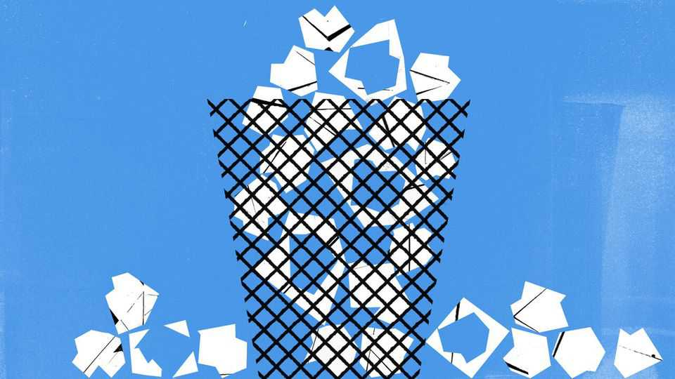
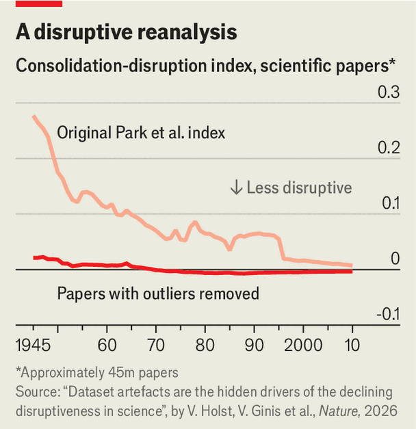

Maybe scientific progress isn’t slowing, after all
A new paper takes aim at the claim that science has become less disruptive

Aug 13th 2026
That science’s best days are behind it, and its rate of progress is slowing, is an old claim. And, since science itself is a perfectly good subject for scientists to investigate, many have looked into it.
One notable contribution came in 2023, when Michael Park, then a PhD student at the University of Minnesota, and his colleagues published a paper in Nature. It analysed citation patterns in 45m scientific papers and 3.9m patents and concluded that the “disruptiveness” of both had fallen off a cliff since the 1950s. This was widely reported (including in The Economist). Its findings found their way into Congressional hearings and speeches by White House officials.

On August 12th came a twist. Nature published a follow-up paper arguing that Dr Park and his colleagues’ conclusions were mostly illusory, caused by problems with the data set they had analysed. Correct those, argues Vincent Holst, a PhD student at Vrije University, in Brussels, and his co-authors, and most of the decline in disruptiveness goes away (see chart).
The original paper’s claim hinges on something called the consolidation-disruption index, or CD index, which aims to measure how much a given paper or patent shakes up its field. It compares a paper’s references with those of papers published later. A paper (or patent) is classed as “consolidating” if subsequent papers cite both the paper itself and the earlier research that it refers back to. It is deemed “disruptive” if future papers cite the paper itself but ignore its own references—the assumption being that a paper like that has shaken things up so much that older work has become irrelevant. The CD index runs from -1 (maximally consolidating) to 1 (maximally disruptive).
Mr Holst argues that Dr Park’s original analysis includes around 970,000 papers and 142,000 patents with a CD of 1. Most achieved that high score by containing no references at all and themselves being referenced by at least one subsequent publication. But when he and his colleagues sampled a hundred such papers and patents at random, they found that 93% of the papers and 98% of the patents did indeed contain references—they had just been misclassified by the database containing them. Further investigation suggested that the proportion of misclassified papers and patents has been falling over time. Strip out the earlier erroneously transformative-looking work, and most of the supposed drop in disruptiveness goes away.
Dr Park and his colleagues are not convinced. In a rebuttal of their own, published alongside Mr Holst’s critique, they point out that, when doing as Mr Holst and his co-authors advise, they still see meaningful declines in disruptiveness.
Part of the argument rests on data-sources. The centrepiece of Dr Park’s original analysis was a database called Web of Science. But Web of Science is not openly available. Mr Holst and his colleagues relied partly on a free alternative, called SciSciNet. Dr Park alleges that SciSciNet contains much more work claiming no citations than Web of Science. Mr Holst retorts that, despite Web of Science being closed, they had nevertheless managed to reconstruct Dr Park’s use of it, and that their critique holds. But in an email Russell Funk, one of Dr Park’s co-authors, claims the reconstruction was done improperly.
What does it all mean? Mr Holst’s paper is not the only critique of Dr Park’s result. Last year Alexander Michael Petersen at the University of California, Merced, and his colleagues published a paper arguing that “citation inflation”—partly a result of the simple fact that, the more work is published, the more work there is to cite—means one should expect the average paper’s CD score to fall over time. When they reanalysed the data, they claimed that disruptiveness may even have increased between 2005 and 2015.
But Dr Park’s paper, in turn, is not the only line of evidence suggesting progress really is slowing down: in 2020 Nicholas Bloom, an economist at Stanford University, and his colleagues, analysed productivity figures and concluded that technological progress in many industries was becoming harder to buy with every passing year. The idea that the wellspring of science is running dry is certainly disruptive. Whether it is true remains moot. ■